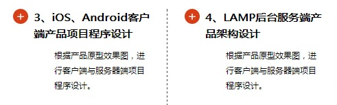
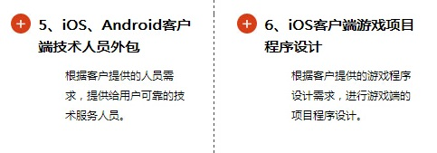
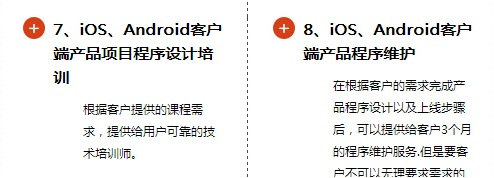
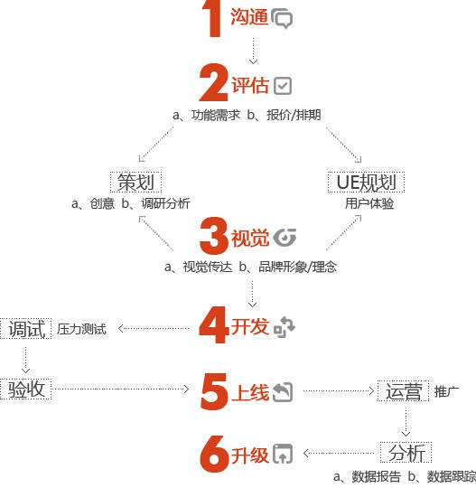
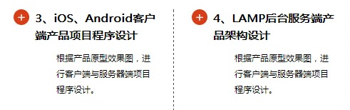
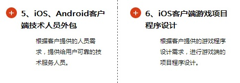
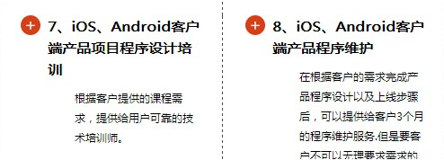
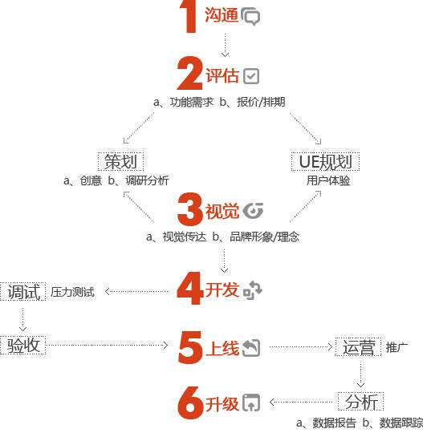

-
[短趣移动社区iOS开发客户端]-学邦世纪合作外包团队
经典APP外包商业案例
2014年05月19日
短趣是由学邦世纪合作外包团队高级讲师赵全举老师开发完成的一款基于个人兴趣爱好交流、分享的移动社区。短趣的最好成绩是苹果appstore的最好成绩是畅销排名第五，日均活跃用户超过50万。 在短趣，生活中除了工作、学习,还要有点自己的乐趣。 去干点自己喜欢的事情吧，邀上三五好友，秀出感兴趣的故事,我们可以有更精彩的生活! 苹果官方热荐,最新潮、最热门的兴趣社交应用。
-
[乐视网ios开发客户端]-学邦世纪合作外包团队
经典APP外包商业案例
2014年05月16日
乐视网ios开发客户端，是学邦世纪合作外包团队在视频领域的一个经典APP外包iOS开发项目，在线播放，搜索，搜藏，历史记录，以及其他重要设置，一气呵成，是appstore里精品的视频app的典范。
-
[我是数学家iOS开发客户端]-学邦世纪合作外包团队
经典APP外包商业案例
2014年05月16日
《我是数学家》是学邦世纪合作外包团队在幼教领域的又一经典外包之作，《我是数学家》专为学龄前宝宝定制的数学互动游戏书。 《我是数学家》按照小学一年级数学课本知识点,通过五个简单的小游戏,配合可爱的卡通小动物和五彩缤纷的游乐场,强化宝宝对数字大小、排序和简单运算的认识,让他们在享受玩耍乐趣的同时轻松掌握100以下的数学常识。
-
[IT时代周刊iOS开发客户端]-学邦世纪合作外包团队
经典APP外包商业案例
2014年04月08日
IT时代周刊官方iPad版，最新版本是2013年2月26日更新，支持ios3以上的ipad，全面支持苹果Newsstand杂志后台自动更新下载，支持评论和微博转发，全新的阅读体验,支持人民币支付，电子杂志与纸刊完全同步步，全面支持订阅，新用户可体验一期免费杂志；
-
[联众天天斗地主iOS开发客户端]-学邦世纪合作外包团队
经典APP外包商业案例
2014年05月06日
天天斗地主iOS开发客户端,全面支持iOS7系统，iPhone5分辨率完美适配！天天都快乐! 联众世界旗下索蓝工作室最新力作《联众天天斗地主》重大更新火热来袭! 画面精美、体验流畅、超省流量, 更可与多平台海量玩家联网游戏,即将引爆新一轮的斗地主风潮! 一样的游戏,带给您不一样的极致体验!
-
[万圣节数学大冒险]-学邦世纪合作外包团队
经典APP外包商业案例
2014年04月21日
万圣节数学大冒险（Halloween Math World）是一款非常适合2-4岁的小朋友的寓教于乐的数学游戏应用，暂时只支持英文版本。中文版本即将推出。
-
[尚品iOS开发客户端]-学邦世纪合作外包团队
经典APP外包商业案例
2014年05月07日
尚品奥莱,是学邦世纪合作外包团队经典APP外包项目案例。 尚品奥莱是尚品旗下会员制时尚奢侈品闪购网站，是国内领先的高端时尚和奢侈品奥特莱斯购物网站。 尚品奥莱网站向消费者提供极高性价比的国际一线奢侈品牌精品及愉悦的奢侈品购物体验。 网站以令人惊喜的折扣令中国消费者可以轻松拥有国际顶尖奢侈品牌精品。
-
[金种子工程iOS开发客户端]-学邦世纪合作外包团队
经典APP外包商业案例
2014年04月17日
为进一步营造中关村创新创业的环境，形成针对不同发展阶段企业的政策支持体系，在深入实施“十百千工程”和“瞪羚计划”重点培育工程等的基础上，中关村管委会推出了专门针对初创期企业的“金种子工程”。“金种子工程”是针对初创期企业特点，通过遴选金种子企业，整合资源，强化服务，促进初创期企业快速发展的培育工程。
-

[爱语APP开发客户端]-学邦世纪合作外包团队
经典APP外包商业案例
2014年04月08日
【爱语APP开发客户端】博看文思iOS开发学员经典APP案例,学邦世纪合作外包团队APP爱情成长日记-爱语！女朋友生日就快到了，送女朋友什么礼物好呢？鲜花？巧克力？手表？饰品……都太土了。资深情感专家认为，送女朋友礼物就要送有纪念意义的，爱意之间
-
E家教，首款找家教的应用
2014年04月08日
如果孩子在做作业时遇到不会做的题，马上就有老师帮他答疑解惑，他就不会有作业的压力； 如果不知道从哪里找好老师给孩子做辅导，就用E家教。 E家教，国内首款找家教的智能手机应用。 最便捷的找家教软件—E家教，E家教为学校教师和找家教的家长量身定做，学生家长可以通过APP快捷方便的直接找到身边的满意的家教老师，学校的老师也可以通过APP安全便捷的找到想找辅导的学生，从而专心从事学生教研辅导工作。